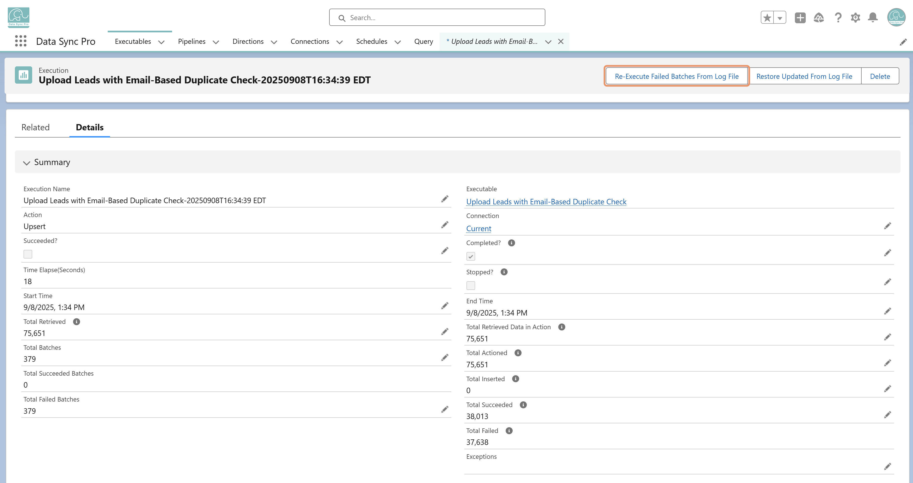
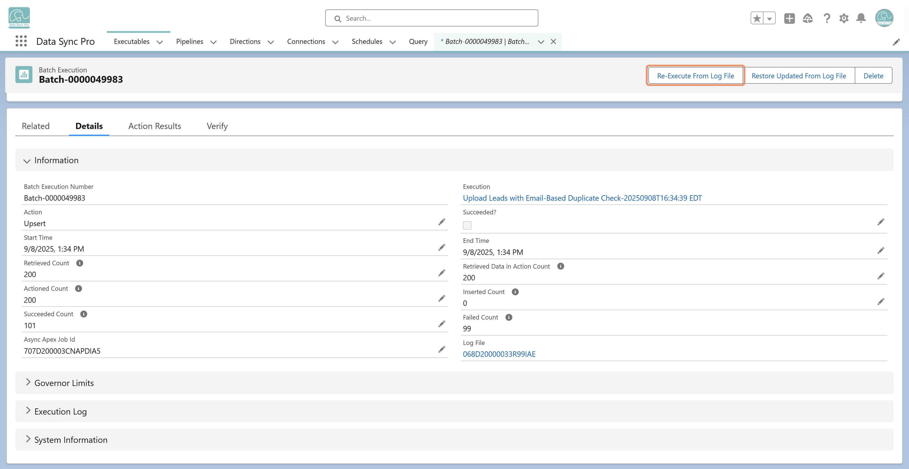

If Log to File is enabled, the input CSV data is stored as a ContentDocument. This allows DSP to selectively replay failed portions of the load. From the Execution record, you can choose Re-Execute Failed Batches to run only the batches that previously failed. This approach preserves the successful batches, avoids duplicating data loads, and ensures efficient recovery from errors without restarting the entire process.

